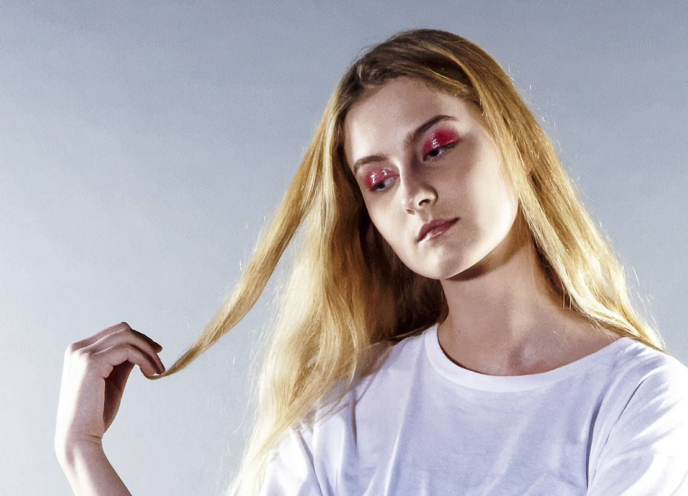

This work is the result of a long and important collaboration with one
of my childhood friend when she was studying to be a fashion designer
and an other friend of mine who was in make-up art school.
We worked together to build a whole universe based on our
differents esthetics.
I've presented this project as my Final Project for my Higher National
Diploma in Photography.
We played a lot with the archetype of the young girl, slightly naive,
bringing us to
the american highschoolgirl fantasy as
we saw it in tv shows.
The ultimate purpose of this photoshoot was to highlight everyone involved in it. I took each picture asking myself : am I enhancing enough the work of the MUA ? Is it perceivable how the model interacts with the fabric of the skirt ? It has been an excellent exercise because I was for the first time managing my own team with all the responsabilities coming with it.
I had to find the proper ways to direct the model and everyone on set while doing my photographer work with all the technical aspects and also follow carefully the guidelines from the designer to respect her esthetic and work.